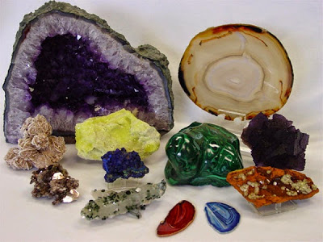
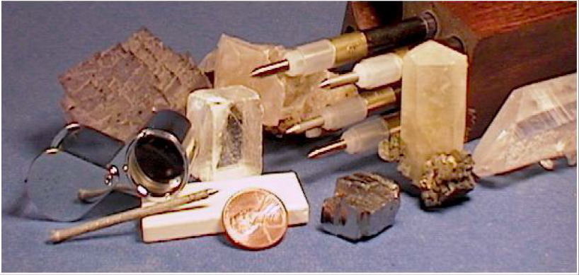

Sobre o projeto:
O catálogo de minerais do Laboratório de Mineralogia foi criado com o objetivo de divulgar e compartilhar o acervo de espécimes minerais que os alunos do CENTEC - Centro de Educação Tecnológica de Contagem - tem acesso, não apenas de modo virtual, mas de modo real. Existem muitos outros exemplares disponíveis para a realização de ensaios e testes visando tornar o aprendizado de mineralogia mais prático, objetivo e eficaz.
O projeto é coordenado pela professsora Dra. Danielle Gomides Alkmim, e ainda está no início. Por enquanto, o site é um esboço. A ideia é que os próprios alunos ajudem a selecionar e catalogar outros minerais disponíveis no Laboratório de Mineralogia.
Como identificar os minerais
Uma das dificuldades enfrentadas pelos colecionadores de minerais que não são geólogos ou engenheiros de minas é a identificação das peças de sua coleção. Alguns minerais são bastante comuns na natureza e no comércio, sendo por isso bem conhecidos dos colecionadores. Outros, porém, são muito procurados não pela beleza, mas pela raridade, e podem não ser de fácil identificação.
A indentificação de uma amostra mineral passa por alguns caminhos:um é procurar alguém que entenda do assunto, como um geólogo ou pelo menos um colecionador muito experiente. Testes físico-químicos e análises instrumentais pode ser um recurso adotado pelo especialista; outro é o próprio colecionador ou interessado tentar identificar o mineral, com o uso de manuais, dicionários ou guias de mineralogia.
Tentar identificar minerais é uma tarefa que pode ser difícil, mas que será cada vez mais fácil à medida que se for adquirindo experiência. Nas orientações a seguir, vamos tratar da identificação de minerais no estado bruto (não lapidados) e sem o uso de equipamentos ou análises sofisticadas.
Equipamentos para Determinar as Propriedades Físicas
Antes de descrever as propriedades dos minerais, é importante saber os equipamentos que podem te ajudar em campo:
- Canivete ou outra lâmina de aço;
- Pequena (poucos centímetros) placa de porcelana branca fosca (não esmaltada);
- Ímã (pequeno), preso a um fio fino e bem flexível, como uma linha de costura;
- Lupa que aumente 10 vezes ou mais. Use a lupa perto do olho e aproxime o mineral dela até vê-lo com nitidez;
- Frasco com ácido clorídrico diluído a 10% (90% de água).
É importante também possuir pelo menos alguns dos minerais da Escala de Mohs, como quartzo, fluorita, calcita e ortoclásio. O que é e como se usa a Escala de Mohs você verá adiante, quando ler sobre a dureza dos minerais.
Identificação dos minerais pelas propriedades físicas
A identificação de minerais pelo exame a olho nu utiliza as propriedades físicas das pedras e, como exceção, o comportamento quando atacado pelo ácido clorídrico (também chamado de ácido muriático) diluído e a frio
Os livros de mineralogia geralmente apresentam os minerais classificados pela composição química, iniciando com os elementos nativos (ouro, prata, diamante, enxofre etc.), que são os quimicamente mais simples, passando a seguir para os de composição cada vez mais complexa (sulfetos, cloretos, sulfatos, carbonatos, silicatos e assim por diante). Testes químicos qualitativos ajudam a identificar a composição química do mineral, o que possibilita identificá-lo mais precisamente.
Essa maneira de apresentação segundo a composição química é racional, mas pouco prática quando se trata de determinar uma espécie desconhecida. Para isso, são preferíveis aquelas que agrupam os minerais de acordo com uma ou duas propriedades físicas e, então, levando em conta outras características, vão reduzindo o leque de possibilidades, até chegar a uma só espécie ou a pelo menos algumas poucas.
Por isso, foi disposto na seção "Constantes Físicas" tabelas que oganizam os minerais segundo algumas de suas propriedades constantes, como densidade, dureza, etre outros.
Você encontrará a descrição de algumas propriedades físicas na seção "Propriedades" tabelas que oganizam os minerais segundo algumas de suas propriedades constantes, como densidade, dureza, etre outros. A seguir, você encontra algumas descrições resumidas dessas propriedades.